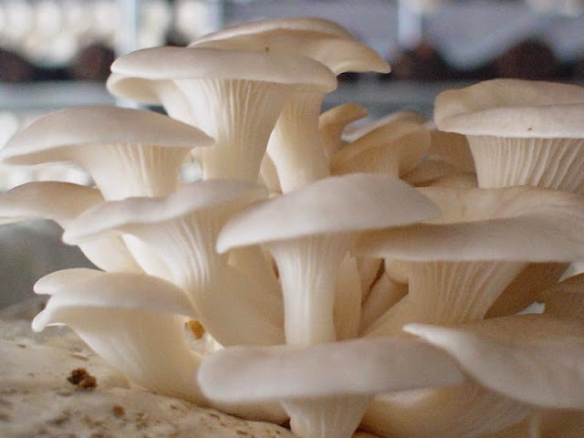
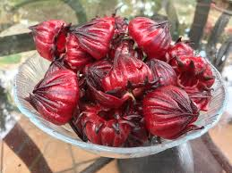
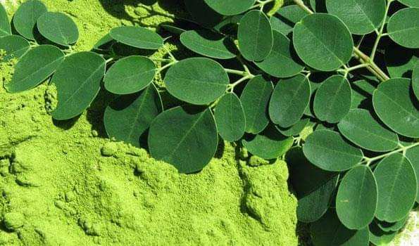
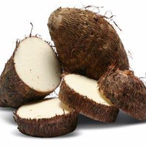
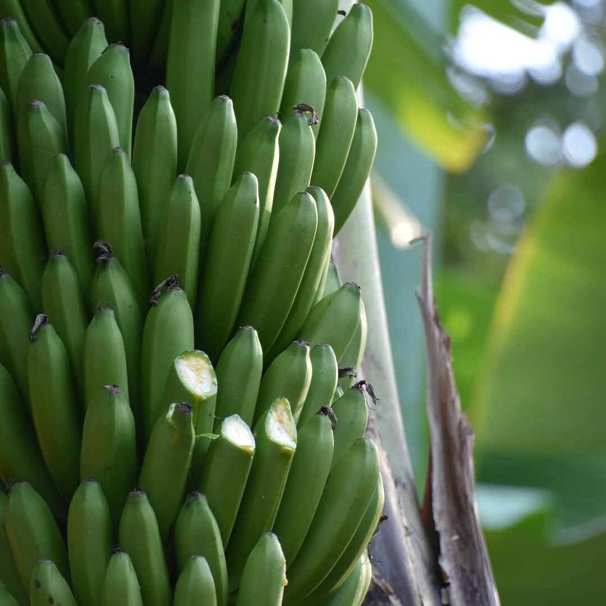
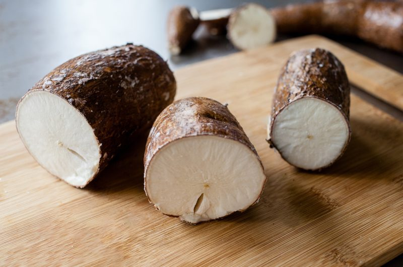
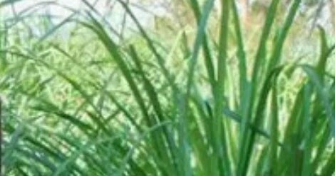
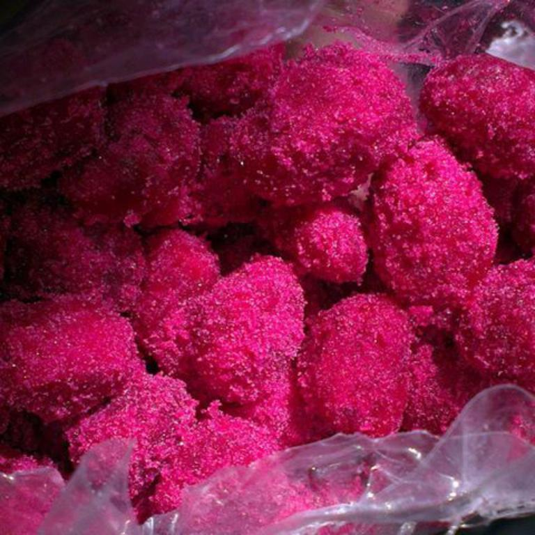
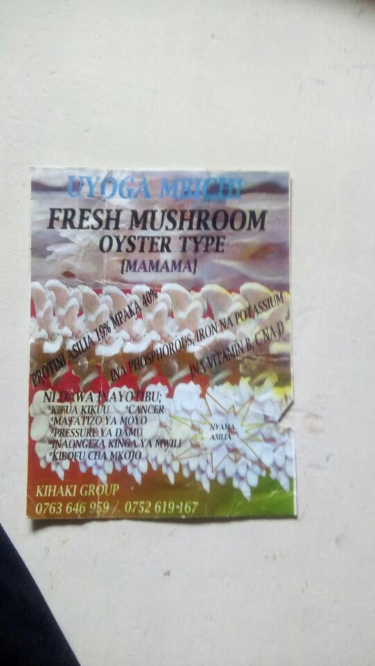

Huduma zetu
-
Uyoga mbichi(fresh mushroom)
Oyster mushroomMANUFAA:
- Una protini aslimia 19% mpaka 40%
- Una phosphorus,iron pamoja na pottasium
- Una vitamin B,C na D
- Ni dawa inayotibu kifua kikuu
- Matatizo ya moyo
- Pressure ya damu
- Inaongeza kinga mwilini
- Kibofu cha mkojo
- Husaidia katika kukuza uwezo wa kufikiria na kukumbuka

-
Rosela
FAIDA ZAKE
- Huongeza vitamin C,A,D,B1 na B2
- Ina madini ya chuma, magnesium na omega 3
- Inaponya magonjwa ya mzunguko wa damu
- Kurahisisha mzunguko wa damu

-
Unga na Mbegu za Mlonge
-
MANUFAA
- Mlonge una:
Kalsiumu mara 17 zaidi ya ile ya maziwa ya ng’ombe
Potasiamu mara 15 zaidi ya ile ya kwenye ndizi
Una vitamini A mara 10 zaidi ya ile ya kwenye karoti
Una protini nyingi mara 9 zaidi ya ile ya kwenye mtindi
Una klorpfiti (kemikali ya rangi ya kijani ipatikanayo katika mimea) mara 4 zaidi ya ile ya kwenye nyasi au majani ya ngano (wheatgrass)
Una madini chuma mara 25 zaidi ya yale ya kwenye Spinach
Una vitamini A mpaka Z
Una omega 3, 6 na 9
Una asidi amino zile muhimu zinazohitajika na mwili
Una kiasi cha kutosha cha madini ya zinc ambayo ni madini muhimu katika kuongeza homoni za kiume na nguvu za kiume kwa ujumla
Mlonge ndicho chakula chenye afya zaidi juu ya ardhi:
Mlonge una jumla ya virutubishi 92, mmea au mti mwingine wenye virutubishi vingi basda ya mlonge una virutubishi 28. Mlonge una vionsa suku 46 na viondoa uvimbe mbalimbali mwilini 36, una asidi amino 18 na asidi amino muhimu zaidi 9 ambazo miili yetu haina uwezo wa kuzitengeneza.
Unga wa majani ya mlonge unao uwezo wa kutibu magonjwa zaidi ya 300 mwilini, magonjwa hayo ni pamoja na :
- 1. HUko Afrika magharibi madaktari hutumia mlonge kutibu kisukari.
- 2. HUko India mlonge hutumika kutibu shinikizo la juu la damu
- 3. HUtibu matatizo u maumivu ya mishipa
- 4. Hutuliza mapigo ya juu ya moyo
- 5. Hutibu kansa
- 6. Pumu
- 7. Hutuliza wasiwasi
- 8. Kikohozi
- 9. Maumivu ya kichwa
- 10. Inazuia na kushusha ile lehemu hata ile ya juu zaidi
- 11. Inapunguza mafuta tumboni
- 12. Inaweza sawa homoni
- 13. Inatibu maumivu wakati wa hedhi
- 14. Unasafisha ini
- 15. Inasafisha mkojo na kibofu cha mkojo
- 16. Inarekebisha matatizo kwenye tezi
- 17. Unatibu kipindupindu na kuharisha
- 18. Kifua kikuu
- 19. Kichwa kizito
- 20. Uchovu
- 21. Mzio
- 22. Vidonda vya tumbo
- 23. Maambukizi kwenye ngozi
- 24. Maumivu mbalimbali mwilini
- 25. Huondoa madoa doa meusi kwenye ngozi
- 26. Husafisha damu
- 27. Hutibu matatizo kwenye koo
- 28. Huondoa makohozi mazito kooni
- 29. Huondoa taka na msongamano kifuani
- 30. Hutibu kipindipindu
- 31. Huondoa moto wa jicho au uvimbe kwenye jicho
- 32. Hutibu maambukizi kwenye macho na kwenye masikio
- 33. Unatibu homa
- 34. Maumivu kwenye maungio
- 35. Huondoa chunusi
- 36. Hutibu matatizo karibu yote ya ngozi na kinga ya mwili
- 37. Matatizo kwenye mfumo wa upumuaji
- 38. Inatibu kiseyeye
- 39. Huongeza uwingi wa mbegu za kiume na nguvu kwa ujumla
- 40. Inatibu minyoo
- 41. Huongeza maziwa kwa wingi kwa mama anayenyonyesha
- 42. Huondoa uvimbe kwenye utumbo mpana
- 43. Inatibu ugonjwa wa kuvimba mwili
- 44. Inatibu kuhara damu
- 45. Inatibu kisonono
- 46. Unatibu tatizo la kukosa usingizi
- 47. Unatibu homa ya manjano
- 48. Unatibu malaria
- 49. Unatibu U.T.I na matatizo mengine kwenye mfumo wa mkojo
- 50. Unasaidia pia kujenga na kuimarisha misuli
- 51. Unatibu magonjwa ya mifupa Mlonge uansafisha mwili wako wote, unasafisha ini, figo, moyo, macho, unaimarisha meno, ngozi na nywele. Wakati unatumia mlonge unakufanya ujisikie vizuri, ujisikie mpya na mwenye nguvu. Watu wengi wanaotumia mlonge huwa ni wenye afya nzuri hata kwa muonekano tu hata wanapokuwa na umri mkubwa zaidi ya miaka 90. Majani ya mti wa mlonge pia yanaweza kutumika kutengeneza biogas. Hutumika pia kama chakala cha wanyama kama sungura , mbuzi, ng’mbe. Mbwa n.k. Sungura wanaonekana kupenda zaidi mlonge kuliko wanyama wote.

- Mlonge una:
Kalsiumu mara 17 zaidi ya ile ya maziwa ya ng’ombe
UNGA WA MAGIMBI(Taro plant)
Faida za magimbi kiafya
magimbi yana virutubisho kama vitamini C, E na B6. pia madini ya potassium, phosphorus, shaba, magnessium na manganese. Pia magimbi yana protini na fati
Husaidia katika kudhibiti kiwango cha sukari hufanya isipande
Hupunguza kasi ya mmeng’enyo wa chakula
Hupunguza hatari ya kupata maradhi ya moyo na mishipa ya dmau
Magimbi yana chembeche,mbe ambazo hulinda mwili dhidi ya saratani kwa kuuwa seli za saratani
Husaidia katika kupunguza uzito
Huboresha afya ya utumbo
Hulinda mwili dhidi ya mashambulizi

UNGA WA NDIZI KITARASA
MANUFAA YA UNGA WA NDIZI YA KITARASA
Unga wa ndizi kifarasa una vitamen A,B,C
Madini ya potasiamu, kalsiamu, sodiamu, silicon, fosiforasi, na kloraini.
Husaidia waathirika wa kisukari cha juu kuvuta hewa ya oksijeni vi
Huleta matokeo mazuri kwa kupunguza unene (obesity).
Huponya magonjwa mengi ya tumbo
Huondoa baridi yabisi (rhemathisim) goita, kifua, magonjwa ya neva na kuvimba miguu.
Huongeza maziwa kwa akina mama
Ndizi kitarasa husaidia kuondoa kondo la ng’ombe la nyuma wakati wa kuzaa likishidikana kutoka
Matumizi
Matumizi
Unga wake hutumika kupika uji, ugali, mtori, juice, mkate, maandazi, chapati, na keki na pia ndizi yenyewe huweza kupikwa kama chalari.

UNGA WA MIHOGO
FAIDA ZA UNGA WA MUHOGO
Unga wa Mihogo husaidia kuimarisha afya za walaji katika maeneo mengi ikiwamo via vya uzazi.
kuepusha matatizo ya moyo
MATUMIZI
Mkate ambao unaweza kuandaliwa kutokana na unga wa mhogo pekee au mchganyiko wa unga wa muhogo na ngano
Vibanzi
Chips
Mkate wa muhogo uliookwa katika tui la nazi
Keki ya muhogo
Muhogo uliopikwa katika mchuzi wa nazi

MCHAI CHAI PAMOJA NA UNGA WAKE
FAIDA ZA MCHAICHAI
Kupunguza cholesterol.
Kulingana na nakala ya Chanzo cha Kuaminiwa katika Jarida la Teknolojia ya Juu ya Madawa na Utafiti, utumiaji wa dondoo za mchaichai huonekana kupunguza kolesteroli katika wanyama. Utafiti unabainisha kuwa athari inategemea kipimo. Hii ina maana kwamba kiasi kikubwa cha mchaichai kinaweza kupunguza cholesterol zaidi.
Kuzuia maambukizi.
Kulingana na Memorial Sloan Kettering Cancer Center, matokeo ya utafiti yanaonyesha kwamba mchaichai unaweza kuwa na uwezo fulani wa kuzuia maambukizi. Kwa mfano, mimea inaonekana kupunguza matukio ya thrush, maambukizi ya fangasi ambayo kwa kawaida huathiri watu walio na kinga dhaifu, kama vile wale walio na VVU.
Kukuza afya ya kinywa.
Katika nchi nyingi ambapo mmea wa mchaichai una asili ya eneo hilo, watu watachukua mabua ya mchaichai na kuzitafuna kama njia ya kuboresha afya ya meno na kuweka kinywa safi.
Kuondoa maumivu.
Kulingana na utafiti mmoja Trusted Source, mchaichai unaweza kuzuia maumivu. Hii ina maana kwamba kunywa chai ya mchaichai kunaweza kusaidia kuzuia mtu asihisi maumivu.
.

|  |  |